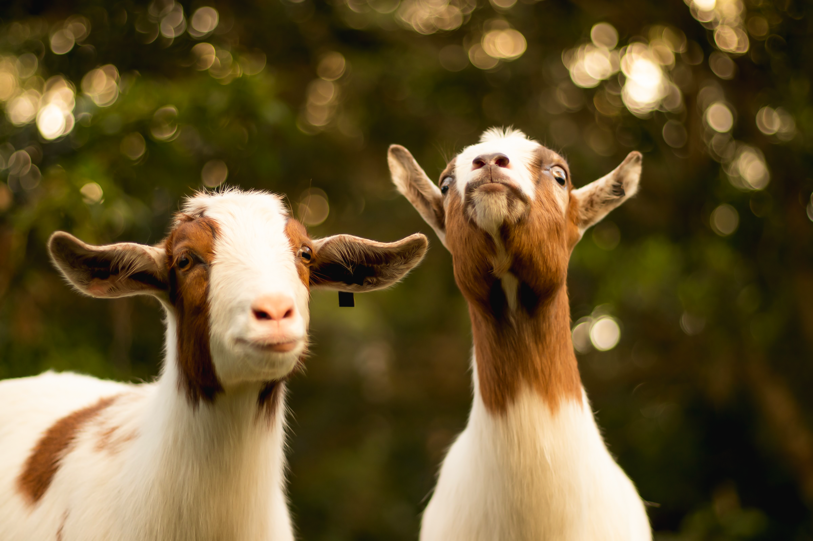

Kaffens historie
Det siges at kaffen blev opdaget helt tilbage i det 6. århundrede i
Yemen, af en gedehyrde ved navn Kaldi. Han lod mærke til, at efter
hans altædende geder havde tygget på en mængde bær fra en kaffebusk,
opførte de sig mere energiske end normalt, og de havde svært ved at
falde til ro igen efterfølgende. Gedehyrden valgte at tage bærrene med
hjem til klosteret, hvor munkene fremstillede et afkog, som de indtog.
De opdagede at afkoget forårsagede, at de havde langt mere energi til
deres gøremål, og de var solgt på stedet.
Et par hundrede år senere krydsede kaffen det Røde Hav til de
arabiske lande, hvor kaffebønnerne blev ristet og brygget som vi
kender den i dag. Med tiden udbredte kaffen sig rundt i verden, og
blev en værdifuld handelsvare som primært var for eliten. I
1800-tallet blev kaffemarkedet oversvømmet af enorme høste, og
herefter blev kaffen nu en drik for folket i stedet for eliten.
